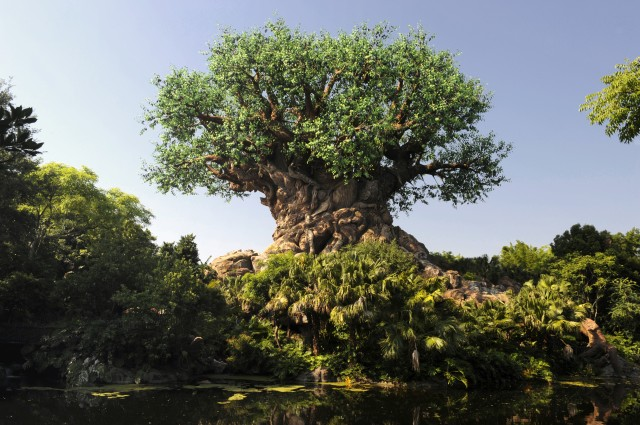

Have you wondered how animators create scenes like the ones above? Well, it’s no surprise that converting this art to animation takes lots and lots of programming skill that is developed over time through countless trials and iterations. Let’s see if we can break down this scene into smaller components and try our hand at building some graphics.
Let’s focus specifically on the tree.If you look closely at the picture, the tree itself is made up of a pattern of similar strokes. In this hour of code, we will teach you how to break down these patterns to have you code a tree of you own. You will be equipped with the basic framework, earning a technique from animators’ toolbox.
With lots of coding and playing around, you will get a tree that looks like this:
